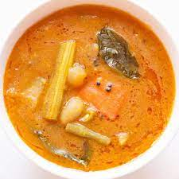

Sambar

DESCRIPTION:
Sambar is one of the dishes served with idlis and
dosas. This tangy, spicy curry has stolen the hearts of many
foodies all over the world.
It is said to have been named after Sambaji, a king
who in a spate of hanger, created it as the usual ingredients
were not available.
INGREDIENTS:
- Tur dal
- Tamarind
- Salt
- Water
- Hing
- Drumstick
- Green Chillies
- Tomatoes
- Coriander
- Curry Leaves
STEPS:
- Soak the tur dal and tamarind separately overnight.
- Let it soak for 6 hours.
- In a pressure cooker, boil the tur dal.
- In a vessel of water, after frying all the dry ingredients, add the boiled tur dal
- You are looking for a slightly thick consistency.
- Let it boil and the ingredients to lose their raw texture
- Take it out and serve